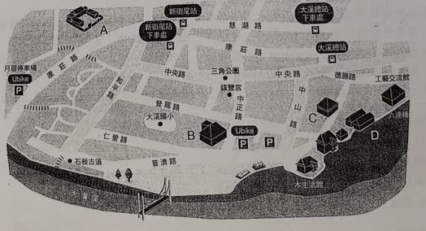
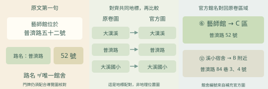
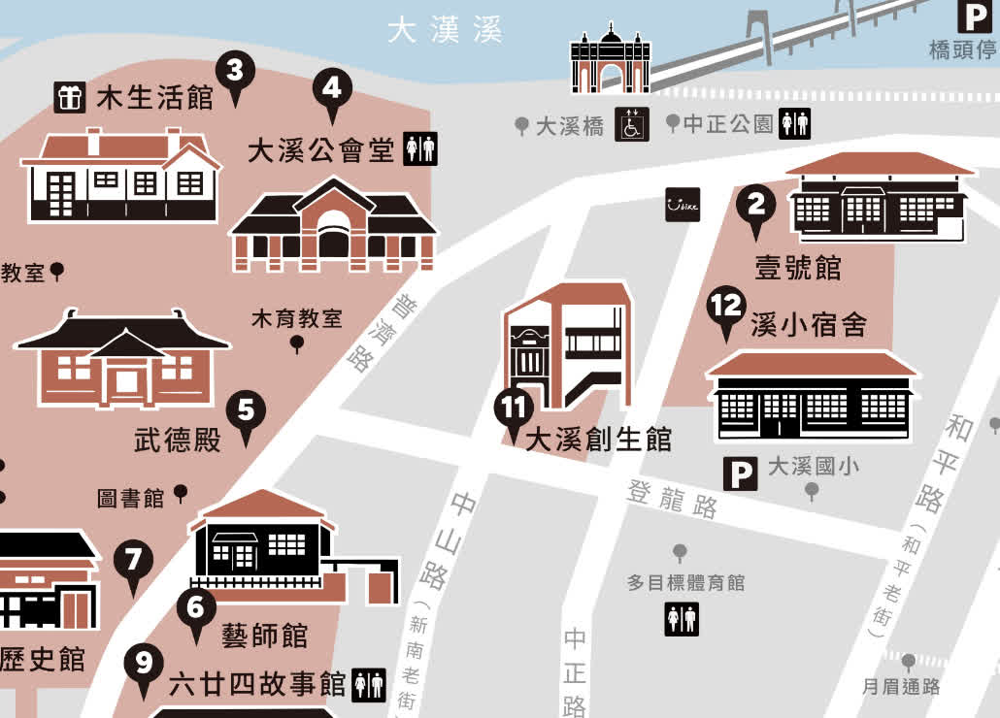
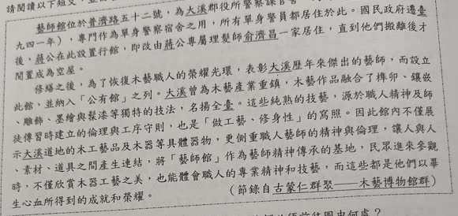
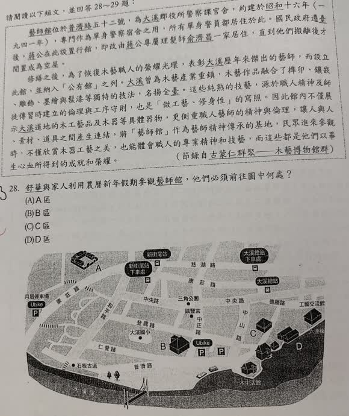

分享原卷｜第 28 題
完整原題
作答所需文章／材料
藝師館位於普濟路五十二號，為大溪郡役所警察課官舍，約建於昭和十六年（一九四一年），專門作為單身警察宿舍之用，所有單身警員都居住於此。國民政府遷臺後，蔣公在此設置行館，即改由蔣公專屬理髮師俞濟昌一家居住，直到他們搬離後才閒置成為空屋。 修繕之後，為了恢復木藝職人的榮耀光環，表彰大溪歷年來傑出的藝師，而設立此館，並納入「公有館」之列。大溪曾為木藝產業重鎮，木藝作品融合了榫卯、鑲嵌、雕飾、墨繪與髹漆等獨特的技法，名揚全臺。這些純熟的技藝，源於職人精神及師徒傳習時建立的倫理與工序守則，也是「做工藝、修身性」的寫照。因此館內不僅展示大溪道地的木工藝品及木器等具體器物，更側重職人藝師的精神與倫理，讓人與人、素材、道具之間產生連結，將「藝師館」作為藝師精神傳承的基地，民眾進來參觀時，不僅欣賞木器工藝之美，也能體會職人的專業精神和技藝，而這些都是他們以畢生心血所得到的成就和榮耀。 （節錄自古蒙仁〈群聚——木藝博物館群〉）
先想一想，再查看答案、解說與原圖
逐項解析
| 選項與原句 | 判讀 | 句意與判斷理由 |
|---|---|---|
| (A) A區 | 不選 | A不在補充導覽圖所示藝師館的位置。 |
| (B) B區 | 不選 | B附近對應溪小宿舍，並非普濟路52號的藝師館；只找到普濟路還不夠。 |
| (C) C區 | 應選 | 對照藝師館地址、官方導覽圖與共同地標，對應原題C區。 |
| (D) D區 | 不選 | D在另一處街廓，與補充導覽圖的藝師館位置不符。 |
詳細說明與解題步驟
先找文章第一句的地址「普濟路五十二號」，再對照原卷地圖的道路、河流、大溪國小與建築位置。本題所指藝師館對應C區，原卷紅筆也訂為C。
要注意：原卷地圖沒有逐棟標示門牌，因此只找到「普濟路」這條路，仍不足以單靠門牌精確區分B、C；不能把附近同一條路的建築都當成藝師館。
原對話後來補上博物館官方導覽圖，標出⑥藝師館與⑫溪小宿舍。把大漢溪、道路與大溪國小作為共同地標，統一方向後比較，可辨認原題C對應藝師館、B附近則是溪小宿舍。兩張圖的視角不同，不能只照畫面左右直接配對。
官方館舍資料亦可核對：藝師館為普濟路52號；溪小宿舍為普濟路84巷3、4號。這些是解說補充資料，沒有把它們改寫進原題。題目保留全文與真正原卷地圖，官方圖只在展開解說後顯示。
核對來源：桃園市立大溪木藝生態博物館「大溪國小日式宿舍（溪小宿舍）」及桃園觀光導覽「藝師館」。

① 藝師館：普濟路五十二號
文章第一句直接給出目的地與完整地址。找到普濟路是第一步，還要確認52號是哪一棟。原卷圖沒有逐棟標門牌，不能看到同一條路旁的館舍，就直接判定答案。
② 兩圖視角不同，先對齊共同地標
補充官方導覽圖有館名，可用大漢溪、普濟路與大溪國小，和原卷圖交叉核對方向與位置。畫面左右不能直接對貼；必須先確認兩張圖講的是哪些相同地標。
③ 官方⑥藝師館，對應原卷C區
官方圖的⑥藝師館與原卷C區相符；B附近則是⑫溪小宿舍，兩者不是同一棟。官方資料也可核對：藝師館在普濟路52號，溪小宿舍在普濟路84巷3、4號。這是解說補充，仍保留原題地圖。
④ 先讀完整地址，用共同地標把兩張圖對齊
答案 C：C區
- 文章給完整地址：普濟路五十二號。
- 共同地標對齊兩圖，不能只照畫面左右。
- 官方⑥藝師館與⑫溪小宿舍分開辨認。

核對註記：已核對題幹、全部選項與必要材料；教材對應課次未確認，歸綜合。
原圖（僅本題）

